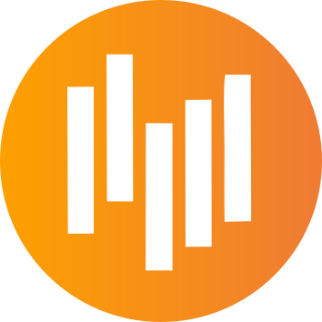

Ona Bages Play
--:--:--
Perfil
Canvis pendents: tanca i torna a obrir l'aplicació
Cal tornar a obrir
Connectant amb el motor…
MOTOR NO DISPONIBLE
El so i els enregistraments s'han aturat.
Reiniciar el motor
Preescolta
Connectant…
Recents
Connectant…